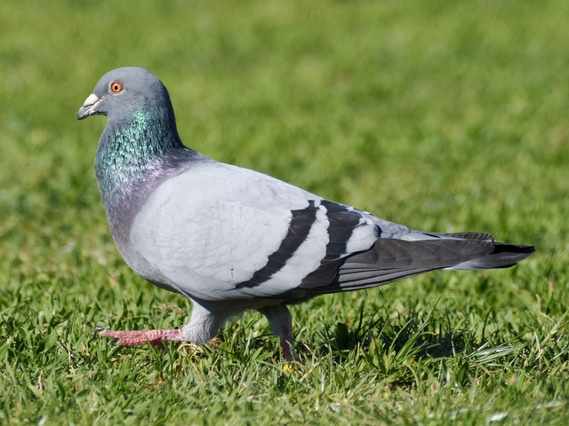
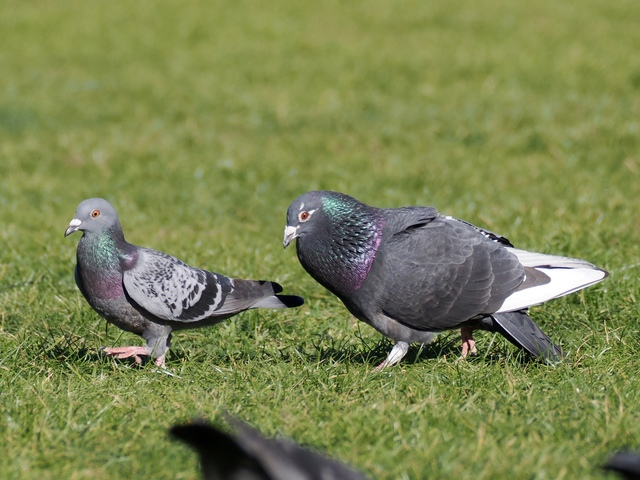

Rock Pigeon
Columba livia
Other names: Rock Dove, Feral Pigeon

The pigeon. The default colour is a blue-grey with light grey wings, two black wing bars, iridescent neck and red eyes. "Wild" rock pigeons are quite rare; the ones we generally see are descended from domesticated pigeons, and hence sport a variety of colours, including red (cinnammon-like), black, white, and pied.

One of the more interesting pigeon behaviours is courting. The male puffs up his neck feathers, cooing, bowing, while following a seemingly disinterested female. I have never seen one succeed, though many baby pigeons are made every year, so I suppose they must be very persistent, or I just haven't wandered the streets enough.
Sounds
Somehow they rarely make noises. The most common sound is a soft Coo, cooooooo... during courtship.